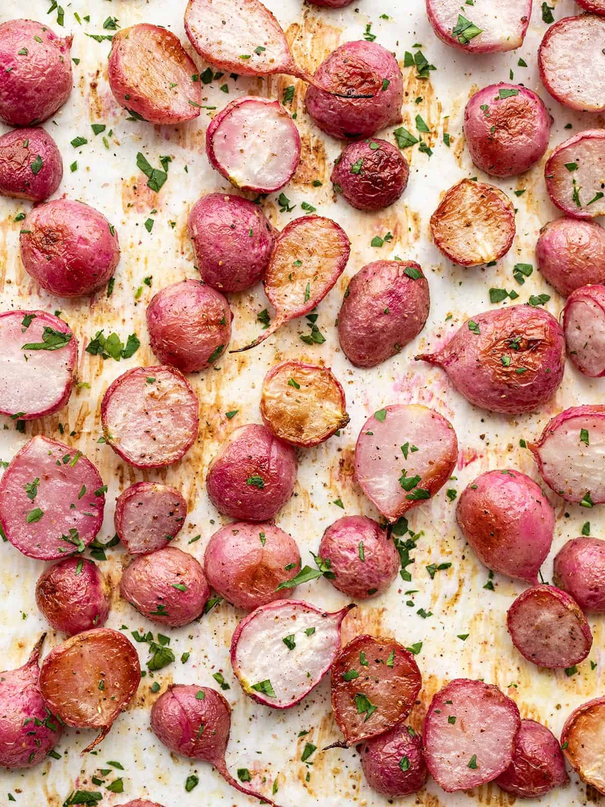

Roasted Radishes

Description
Radishes are not super popular in US dining, but this recipe
for roasted radishes might make you add them to your grocery list.
They aren't super flavorful on their own, but they work well with most
seasonings. Plus, they are pretty and will add a pop of color to
your plate!
Ingredients
- 2 lbs radishes
- 1.5 Tbsp olive oil
- 1/2 tsp salt
- 1/4 tsp black pepper
- 1/4 tsp garlic powder
- 1 Tbsp chopped parsley
Steps
-
Preheat the oven to 400ºF.
Trim the stems or any extra long roots from the radishes.
Rinse the radishes well in a colander.
-
Slice the radishes in half and place them on a large baking sheet
-
Drizzle the olive oil over the radishes, then add the salt, pepper, and garlic powder.
Toss the radishes until they're coated in oil and seasoning.
-
Transfer the seasoned radishes to the oven and roast for about 40 minutes, or until they're
golden brown and tender, stirring once halfway through. Total roasting time will depend on
the size of your radishes.
-
Taste the radishes and adjust the salt or other seasonings to your liking.
Top with fresh chopped parsley for garnish, if desired.